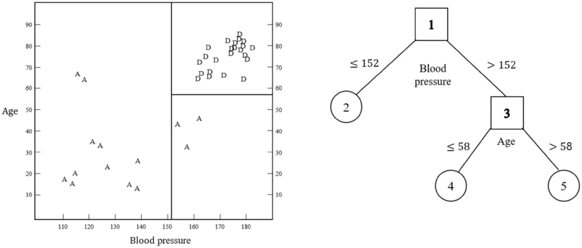

On the heels of the EDA we performed, we’re ready to begin modeling!
Recall that our goal is to predict the potability (safeness to drink) of water based on some measurements about it. In the EDA, we found that the following predictors are most useful:
solids
chloramines
conductivity
hardness
ph
turbidity
Preparing our Data
Before modeling, we’ll prepare our data the same way as in the EDA file.
Additionally, we pare down to just the useful predictors.
There are 491 observations with missing ph readings. We didn’t cover imputation, so it’s most prudent to simply remove these observations from the data set:
water <- water |>drop_na()# no more missing ph valuessum(is.na(water$ph))
[1] 0
Now that the data is ready, we can partition our data into a train/test split!
Train/Test Split + CV Folds
We’re told to use a 70/30 train/test split, so we reserve 70% of the data for model training. I’m including potable as the strata so that there’s a proportional amount of potable/non-potable water in both partitions.
Also, we split up the training partition into 5 folds as instructed.
Next, we’ll make a very simple recipe to add to our workflows.
This is a brief recipe for a few reasons:
We don’t have any dummy variables
We don’t need to normalize our numeric variables for tree-based methods
We don’t need to apply any transformations
Hence, we just specify that our response (potability) is a function of all the predictors in the data set:
tree_rec <-recipe(potable ~ ., data = water_train)
At this point, it’s time to work on each model separately!
Classification Tree Model
Introduction
A classification tree is a type of tree-based model that attempts to predict the class/group of an observation based on other inputs.
Tree-based models work by splitting the predictor space into regions. The predictor values at which the splits occur are determined by a loss function during the training process. Splits are binary (they form two groups) and recursive (keep happening until stop condition is met).
In classification, splits are chosen to produce the “purest” possible child nodes. If an observation falls into a region, the model classifies it based on the most common class in that bin.
A visual Representation of Tree-based Models
On the left hand side of image below, the predictor space is divided into three regions based on the values of Age and Blood Pressure. The right side of the image shows this representation in tree form.
Consider a person with a blood pressure less than 152. Starting at first node (the box labeled ‘1’), this person’s blood pressure classifies them in the (2) region, corresponding to the larger region on the left side of the predictor space.
When trees don’t have perfectly pure nodes, the most prevalent class in the region is the prediction. For regression tasks, the average of the observations in the region is predicted instead.

Classification Tree Example from Choi, Doowon, et. al (2020)
Defining Model + Workflow:
We specify the following details when creating our model:
Build a decision tree with:
Maximum depth of 30
Minimum terminal node size of 10
Tuneable cost complexity penalty
Use the rpart engine to build a classification tree
Regarding our workflow, we simply specify our recipe and the model we just made.
We can see that there’s a tie for the best cost complexity parameter. We’ll choose the larger penalty, as this will reduce the likelihood our tree over-fits the training data. We can do this using the select_best() function:
We’ll save the test accuracy for the model showdown.
Next, we build the random forest model!
Random Forest Model
Introduction
A random forest model is a type of ensemble method where many trees are generated and predictions are pooled across the entire ensemble (rather than from a single tree).
Each tree in a random forest is grown with bootstrapped data (samples with replacement from the original data). At each node (branch), a random subset of predictors is considered, rather than the full set.
Random forest models are less prone to over fitting, as the randomization decreases the correlation of trees in the ensemble. This can also increase their predictive power
Compared to regular classification trees, random forest models tend to perform better on new data at the expense of their higher computational demand (especially during training).
Defining Model + Workflow
For the random forest model, we specify the following:
Use the ranger engine to build the forest
The tree is for classification, not regression
Tune mtry, the number of predictors considered at each split
Again, our workflow is simply our general recipe plus the model specification:
Fitting the Model + Tuning # of Predictors per Split
Next, we fit the model to the training folds to optimize the mtry parameter. This parameter defines the number of predictors considered at each split. It’s maximum possible value is the number of predictors in our model (6), and minimum is one. We’ll consider every possible value.
Again, we use log loss as the loss metric.
# fit rf model to CV folds w/ all levels for mtryrf_fits <- rf_wkf |>tune_grid(resamples = water_folds,grid =6,metrics =metric_set(mn_log_loss))
i Creating pre-processing data to finalize 1 unknown parameter: "mtry"
We’re ready to compare our models on the test set!
Model Showdown
With our tuning parameters optimized, all we have left is to test the models on data they haven’t seen before!
# final fit for classification treetree_final_fit <- tree_final_wkf |>last_fit(water_split,metrics =metric_set(accuracy, mn_log_loss))# final fit for rf modelrf_final_fit <- rf_final_wkf |>last_fit(water_split,metrics =metric_set(accuracy, mn_log_loss))tree_metrics <- tree_final_fit |>collect_metrics()rf_metrics <- rf_final_fit |>collect_metrics()# table to compare metricsrbind(tree_metrics, rf_metrics) |>cbind(model =rep(c("Tree", "Random Forest"), each =2)) |>select(model, .metric, .estimate) |>rename("metric"=".metric","estimate"=".estimate")
model metric estimate
1 Tree accuracy 0.6045400
2 Tree mn_log_loss 0.6711279
3 Random Forest accuracy 0.6200717
4 Random Forest mn_log_loss 0.6404445
With a superior log loss and slightly superior accuracy, the random forest model did the best job at predicting water potability, correctly classifying 62.01% of water sources!
We’ll train this model on the entire data set and save it to use in our Docker container.